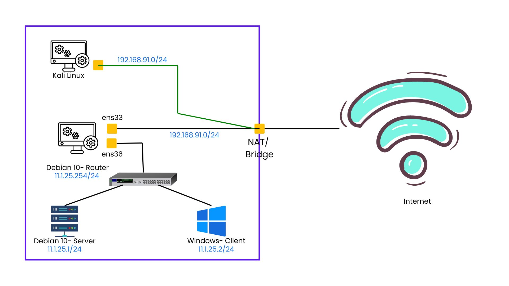

Toppologi
Kali Linux
Kali ini kita ganti Interfaces Network untuk KaliLinux menjadi NAT atau Bridge. Ini artinya dia akan mendapatkan IP Internet yang satu segment dengan Router, yaitu : 192.168.91.0/24
Debian 10- Router
Interfaces
ens33 NAT : 192.168.91.0/24
ens36 LAN : 11.1.25.254/24
Package
- net-tools
- iptables-persistent
- netfilter-persistent
- proftpd
- vsftpd
- snort (new)
Snort sendiri adalah Open Source yang tersedia di berbagai variasi Unix (termasuk Linux) dan juga Microsoft Windows. Sebuah NIDS akan memperhatikan seluruh segmen jaringan dimana dia berada, berbeda dengan host based IDS yang hanya memperhatikan sebuah mesin dimana software host based IDS tersebut di pasang.
Konfigurasi
Install snort pada Debian 10- Router
apt install snort
Selanjutnya kita akan mengganti isi file tersebut
ipvar HOME_NET menjadi ipvar HOME_NET 192.168.91.0/24
Lalu tambahkan file konfigurasi aturan
nano /etc/snort/rules/local.rules
alert icmp any any -> any any (msg:"PING DETECTED!";sid:10000001;rev:0)
alert tcp any any -> any 161 (msg:"NMAP SCAN DETECTED";sid:10000002;rev:1)
alert tcp any any -> any 22 (msg:"SSH login DETECTED";sid:10000003;rev:1)
Restart service snort agar bisa berjalan dengan baik dan benar
/etc/init.d/snort restart
Jalankan snort agar ada pertanda/pemberitahuan dari sistem
snort -A console -q -c /etc/snort/snort.conf -i ens33
KaliLinux
Pada KaliLinux buka command prompt lalu ketik
nmap -sN (IP Debian10-Router) nmap -sN 192.168.91.150
Pastikan di Debian 10- Router terdapat pemberitahuan jika ada yang sedang melakukan port scanning.